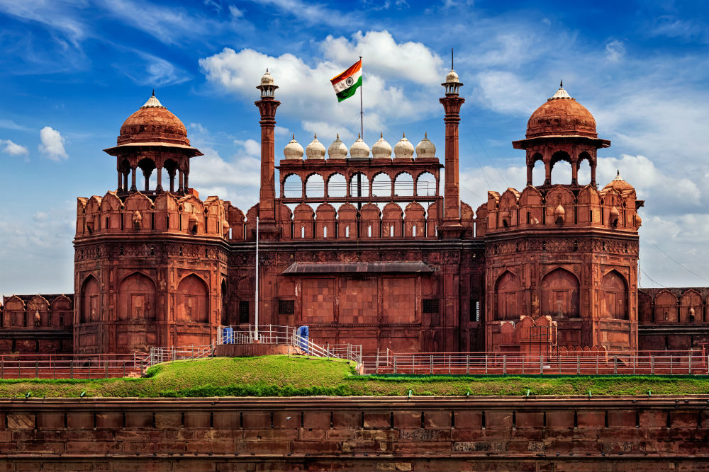

Taj Mahal (India)
A white marble mausoleum built by the Mughal Emperor Shah Jahan in memory of his wife Mumtaz Mahal.
Agra Fort
Agra Fort, a UNESCO World Heritage Site, stands as a majestic testament to the grandeur of Mughal architecture, its imposing red sandstone walls encapsulating centuries of history and cultural heritage.

Ajanta Caves
The Ajanta Caves, a UNESCO World Heritage Site, are a mesmerizing testament to ancient Indian artistry, housing intricately carved Buddhist cave temples adorned with exquisite paintings and sculptures dating back to the 2nd century BCE.
Fatehpur Sikri
Fatehpur Sikri, a UNESCO World Heritage Site, stands as a striking example of Mughal architectural brilliance, with its red sandstone structures and intricately designed palaces, mosques, and courtyards, embodying the splendor of Emperor Akbar's reign.

Qutub Minar
Qutub Minar, an iconic symbol of Delhi's rich history, is the world's tallest brick minaret, standing proudly amidst an architectural ensemble that reflects centuries of cultural and artistic fusion.
Humayun’s Tomb
Humayun's Tomb, a UNESCO World Heritage Site, is a masterpiece of Mughal architecture, embodying elegance and symmetry in its majestic proportions, and serving as a precursor to the architectural wonders of the later Taj Mahal.

Red Fort (India))
The Red Fort, a UNESCO World Heritage Site in Delhi, India, stands as a majestic symbol of Mughal architecture and rich historical significance.

Elephanta Caves
The Elephanta Caves, nestled on Elephanta Island near Mumbai, are an awe-inspiring testament to ancient Indian sculptural artistry, housing intricately carved rock-cut temples dedicated to Hindu gods and goddesses, including the renowned Trimurti sculpture.